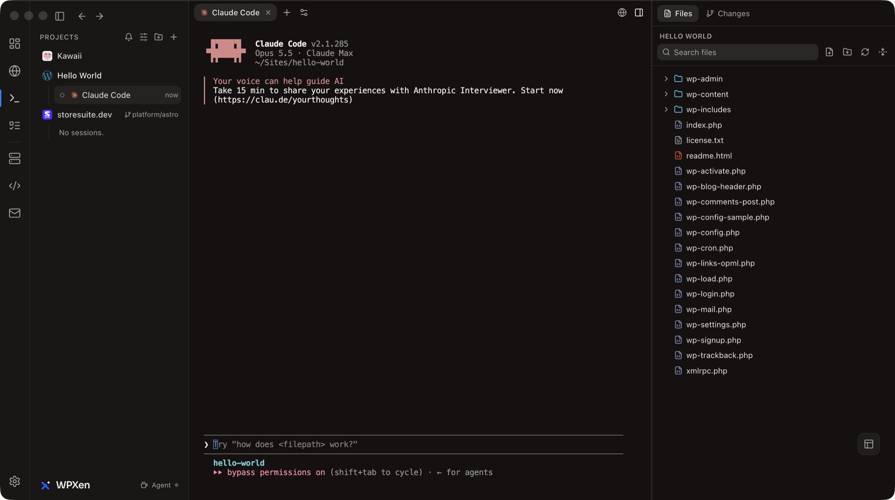

<title>WPXen</title>
<meta name="claude:viewport-fit-sides" content="cover" />
<link rel="preconnect" href="https://fonts.googleapis.com" />
<link rel="preconnect" href="https://fonts.gstatic.com" crossorigin />
<link
  rel="stylesheet"
  href="https://fonts.googleapis.com/css2?family=Bricolage+Grotesque:opsz,wght@12..96,500..800&amp;family=Figtree:wght@400;500;600&amp;family=JetBrains+Mono:wght@400;500&amp;display=swap"
/>
<style>
  /* Layout: a dated engineering log. A left rail says when each piece of work happened; the story runs beside it. */
  :root {
    --paper: #edf1f2;
    --surface: #fafcfc;
    --ink: #10212a;
    --muted: #4c5d65;
    --rule: #c4d0d4;
    --accent: #0a60ff;
    --me: #0e7d8d;
    --team: #c47f00;
    --before: #9aa8ae;
    --note: #e0ebed;
    --band: #0b132b;
    --band-ink: #f1f5f4;
    --band-muted: #afc4ca;
    --band-rule: #2a4955;
    --highlight: #f2b9aa;
    --display: 'Bricolage Grotesque', system-ui, sans-serif;
    --body: 'Figtree', system-ui, -apple-system, 'Segoe UI', sans-serif;
    --mono: 'JetBrains Mono', ui-monospace, Menlo, Consolas, monospace;
  }
  @media (prefers-color-scheme: dark) {
    :root:not([data-theme='light']) {
      --paper: #0b171d;
      --surface: #13232b;
      --ink: #e5edef;
      --muted: #a0b2b8;
      --rule: #2c3f47;
      --accent: #0a84ff;
      --me: #2aa3b3;
      --team: #c08a1e;
      --before: #66767c;
      --note: #183039;
      --band: #0b132b;
      --band-ink: #f1f5f4;
      --band-muted: #afc4ca;
      --band-rule: #2a4955;
      --highlight: #f2b9aa;
      color-scheme: dark;
    }
  }
  :root[data-theme='dark'] {
    --paper: #0b171d;
    --surface: #13232b;
    --ink: #e5edef;
    --muted: #a0b2b8;
    --rule: #2c3f47;
    --accent: #0a84ff;
    --me: #2aa3b3;
    --team: #c08a1e;
    --before: #66767c;
    --note: #183039;
    --band: #0b132b;
    --band-ink: #f1f5f4;
    --band-muted: #afc4ca;
    --band-rule: #2a4955;
    --highlight: #f2b9aa;
    color-scheme: dark;
  }
  * {
    box-sizing: border-box;
  }
  :root {
    padding-top: env(safe-area-inset-top, 0px);
    padding-bottom: env(safe-area-inset-bottom, 0px);
  }
  body {
    background: var(--paper);
    color: var(--ink);
    font: 400 17px/1.65 var(--body);
    margin: 0;
  }
  img {
    max-width: 100%;
  }
  a {
    color: var(--accent);
    text-underline-offset: 3px;
  }
  a:focus-visible {
    outline: 2px solid var(--accent);
    outline-offset: 3px;
    border-radius: 2px;
  }
  .gutter {
    padding-left: max(20px, env(safe-area-inset-left, 0px));
    padding-right: max(20px, env(safe-area-inset-right, 0px));
  }
  .wrap {
    max-width: 1120px;
    margin-inline: auto;
  }
  h1,
  h2,
  h3 {
    font-family: var(--display);
    text-wrap: balance;
    margin: 0;
    letter-spacing: -0.015em;
  }
  h2 {
    font-size: clamp(1.65rem, 1.3rem + 1.4vw, 2.35rem);
    line-height: 1.12;
    font-weight: 700;
  }
  h3 {
    font-size: 1.15rem;
    line-height: 1.3;
    font-weight: 650;
    letter-spacing: -0.005em;
  }
  p {
    margin: 0;
  }
  code {
    font: 400 0.84em var(--mono);
    background: var(--note);
    padding: 0.08em 0.32em;
    border-radius: 3px;
    overflow-wrap: anywhere;
  }
  .hero {
    background: var(--band);
    color: var(--band-ink);
    padding-block: clamp(36px, 6vw, 72px) 0;
  }
  .hero.noshots {
    padding-block-end: clamp(28px, 4vw, 48px);
  }
  .hero a {
    color: var(--highlight);
  }
  .eyebrow {
    font: 500 0.76rem/1.4 var(--mono);
    letter-spacing: 0.09em;
    text-transform: uppercase;
    color: var(--highlight);
  }
  .hero h1 {
    font-size: clamp(2.45rem, 1.5rem + 4.6vw, 5rem);
    line-height: 1;
    font-weight: 750;
    letter-spacing: -0.03em;
    margin-top: 18px;
    max-width: 17ch;
  }
  .lede {
    font-size: clamp(1.08rem, 1rem + 0.4vw, 1.3rem);
    line-height: 1.55;
    max-width: 62ch;
    margin-top: 24px;
    color: var(--band-ink);
  }
  .hero code {
    background: var(--band-rule);
    color: var(--band-ink);
  }
  .facts {
    display: grid;
    grid-template-columns: repeat(auto-fit, minmax(170px, 1fr));
    gap: 18px 28px;
    margin: 34px 0 0;
    padding: 20px 0;
    border-top: 1px solid var(--band-rule);
  }
  .facts dt {
    font: 500 0.72rem/1.4 var(--mono);
    letter-spacing: 0.07em;
    text-transform: uppercase;
    color: var(--band-muted);
  }
  .facts dd {
    margin: 4px 0 0;
    font-size: 0.98rem;
    line-height: 1.4;
  }
  .shots {
    display: grid;
    grid-template-columns: minmax(0, 1fr) minmax(0, 0.262fr);
    gap: clamp(10px, 2vw, 22px);
    align-items: end;
    margin-top: 26px;
    margin-bottom: -60px;
    position: relative;
  }
  .shots.single {
    grid-template-columns: minmax(0, 1fr);
  }
  .shots img {
    display: block;
    width: 100%;
    height: auto;
    border-radius: 10px 10px 0 0;
    box-shadow: 0 14px 44px rgba(0, 0, 0, 0.4);
  }
  .shots img.phone {
    border-radius: 14px 14px 0 0;
  }
  .shot-note {
    padding-top: 72px;
    font: 400 0.78rem/1.5 var(--mono);
    color: var(--muted);
  }
  .noshots + main .shot-note {
    padding-top: 24px;
  }
  section.entry {
    display: grid;
    grid-template-columns: 150px minmax(0, 1fr);
    gap: 0 36px;
    padding-block: clamp(38px, 5vw, 62px);
    border-top: 1px solid var(--rule);
  }
  section.entry.first {
    border-top: 0;
  }
  .rail {
    font: 500 0.78rem/1.45 var(--mono);
    color: var(--accent);
    padding-top: 0.5rem;
  }
  .rail span {
    display: block;
    color: var(--muted);
    font-weight: 400;
  }
  .col {
    min-width: 0;
    display: grid;
    gap: 18px;
  }
  .col > p,
  .col > ul,
  .col > h2,
  .col > h3 {
    max-width: 68ch;
  }
  .col > h3 {
    margin-top: 12px;
  }
  ul.tight {
    margin: 0;
    padding-left: 1.15em;
    display: grid;
    gap: 8px;
  }
  ul.tight li::marker {
    color: var(--accent);
  }
  strong {
    font-weight: 600;
  }
  figure {
    margin: 8px 0;
    min-width: 0;
  }
  figcaption {
    font-size: 0.9rem;
    line-height: 1.5;
    color: var(--muted);
    margin-top: 10px;
    max-width: 68ch;
  }
  .scroll {
    overflow-x: auto;
    background: var(--surface);
    border: 1px solid var(--rule);
    border-radius: 8px;
  }
  .scroll svg {
    display: block;
    width: 100%;
    height: auto;
    min-width: 680px;
  }
  .shot {
    display: block;
    width: 100%;
    height: auto;
    border-radius: 8px;
    border: 1px solid var(--rule);
  }
  .d-box {
    fill: var(--surface);
    stroke: var(--ink);
    stroke-width: 1.2;
  }
  .d-zone {
    fill: var(--note);
    stroke: var(--rule);
    stroke-width: 1;
  }
  .d-t {
    font: 600 13px var(--body);
    fill: var(--ink);
  }
  .d-s {
    font: 400 11.5px var(--mono);
    fill: var(--muted);
  }
  .d-z {
    font: 500 11.5px var(--mono);
    fill: var(--muted);
  }
  .d-l {
    stroke: var(--ink);
    stroke-width: 1.3;
    fill: none;
  }
  .d-dash {
    stroke-dasharray: 5 4;
  }
  .d-life {
    stroke: var(--rule);
    stroke-width: 1.2;
  }
  .d-a {
    stroke: var(--accent);
    stroke-width: 2.2;
    fill: none;
  }
  .d-at {
    font: 600 12px var(--body);
    fill: var(--accent);
  }
  .d-m {
    fill: var(--ink);
  }
  .d-ma {
    fill: var(--accent);
  }
  .d-check {
    fill: var(--note);
    stroke: var(--accent);
    stroke-width: 1.6;
  }
  .chart {
    background: var(--surface);
    border: 1px solid var(--rule);
    border-radius: 8px;
    padding: 18px clamp(12px, 2.2vw, 24px) 12px;
  }
  .chart .in {
    overflow-x: auto;
  }
  .chart svg {
    display: block;
    width: 100%;
    height: auto;
    min-width: 600px;
  }
  .legend {
    display: flex;
    flex-wrap: wrap;
    gap: 6px 20px;
    font-size: 0.9rem;
    margin-bottom: 10px;
  }
  .legend i {
    display: inline-block;
    width: 11px;
    height: 11px;
    border-radius: 2px;
    margin-right: 7px;
    vertical-align: -1px;
  }
  .c-me {
    fill: var(--me);
  }
  .c-team {
    fill: var(--team);
  }
  .g-grid {
    stroke: var(--rule);
    stroke-width: 1;
    stroke-dasharray: 2 4;
  }
  .g-base {
    stroke: var(--ink);
    stroke-width: 1.2;
  }
  .g-tick {
    stroke: var(--muted);
    stroke-width: 1;
  }
  .g-ax {
    font: 400 11px var(--mono);
    fill: var(--muted);
  }
  .g-m {
    font: 500 12px var(--mono);
    fill: var(--ink);
  }
  .g-v {
    font: 500 10.5px var(--mono);
    fill: var(--muted);
  }
  .totals {
    display: grid;
    grid-template-columns: repeat(auto-fit, minmax(150px, 1fr));
    gap: 12px 24px;
    margin-top: 6px;
  }
  .totals div {
    border-top: 1px solid var(--rule);
    padding-top: 8px;
  }
  .totals b {
    display: block;
    font: 650 1.5rem/1.1 var(--display);
    font-variant-numeric: tabular-nums;
  }
  .totals small {
    display: block;
    font: 400 0.78rem/1.45 var(--mono);
    color: var(--muted);
  }
  .ranges {
    background: var(--surface);
    border: 1px solid var(--rule);
    border-radius: 8px;
    padding: 18px clamp(12px, 2.2vw, 24px);
    display: grid;
    gap: 16px;
  }
  .row-h {
    display: flex;
    flex-wrap: wrap;
    justify-content: space-between;
    gap: 2px 14px;
    font-size: 0.94rem;
    margin-bottom: 6px;
  }
  .row-h span {
    font: 400 0.78rem/1.7 var(--mono);
    color: var(--muted);
    font-variant-numeric: tabular-nums;
  }
  .track {
    position: relative;
    height: 30px;
    background-image: linear-gradient(to right, var(--rule) 1px, transparent 1px);
    background-size: 25% 100%;
    border-right: 1px solid var(--rule);
  }
  .bar {
    position: absolute;
    height: 12px;
    border-radius: 0 3px 3px 0;
    min-width: 4px;
  }
  .bar.b {
    top: 2px;
    background: var(--before);
  }
  .bar.a {
    top: 16px;
    background: var(--me);
  }
  .axis {
    display: flex;
    justify-content: space-between;
    font: 400 0.74rem var(--mono);
    color: var(--muted);
    font-variant-numeric: tabular-nums;
  }
  pre {
    margin: 0;
    overflow-x: auto;
    background: var(--surface);
    border: 1px solid var(--rule);
    border-radius: 8px;
    padding: 14px 16px;
    font: 400 0.8rem/1.75 var(--mono);
  }
  pre .t {
    color: var(--accent);
    font-weight: 500;
    margin-right: 1.2ch;
  }
  .tbl {
    overflow-x: auto;
    border: 1px solid var(--rule);
    border-radius: 8px;
    background: var(--surface);
  }
  table {
    border-collapse: collapse;
    width: 100%;
    font-size: 0.94rem;
    min-width: 520px;
  }
  th,
  td {
    padding: 10px 14px;
    text-align: left;
    border-bottom: 1px solid var(--rule);
    vertical-align: top;
  }
  tr:last-child td {
    border-bottom: 0;
  }
  th {
    font: 500 0.72rem var(--mono);
    letter-spacing: 0.06em;
    text-transform: uppercase;
    color: var(--muted);
  }
  td.n {
    font-variant-numeric: tabular-nums;
    white-space: nowrap;
  }
  .split {
    display: grid;
    grid-template-columns: repeat(auto-fit, minmax(280px, 1fr));
    gap: 14px;
  }
  .split > div {
    background: var(--surface);
    border: 1px solid var(--rule);
    border-radius: 8px;
    padding: 16px 18px;
    min-width: 0;
  }
  .split h3 {
    margin-bottom: 10px;
    display: flex;
    align-items: center;
    gap: 9px;
  }
  .split h3 i {
    width: 11px;
    height: 11px;
    border-radius: 2px;
    display: inline-block;
  }
  .split ul {
    font-size: 0.95rem;
  }
  .defs {
    display: grid;
    gap: 0;
    margin: 0;
    border-top: 1px solid var(--rule);
  }
  .defs > div {
    display: grid;
    grid-template-columns: minmax(0, 190px) minmax(0, 1fr);
    gap: 4px 22px;
    padding: 14px 0;
    border-bottom: 1px solid var(--rule);
  }
  .defs dt {
    font-family: var(--display);
    font-weight: 650;
    line-height: 1.35;
  }
  .defs dd {
    margin: 0;
    font-size: 0.97rem;
    max-width: 62ch;
  }
  .muted {
    font-size: 0.9rem;
    color: var(--muted);
  }
  footer {
    border-top: 1px solid var(--rule);
    padding-block: 32px 56px;
    color: var(--muted);
    font-size: 0.9rem;
    line-height: 1.6;
  }
  footer h3 {
    color: var(--ink);
    margin-bottom: 6px;
  }
  footer p {
    max-width: 76ch;
  }
  .stack {
    font: 400 0.8rem/1.8 var(--mono);
    color: var(--muted);
  }
  @media (max-width: 780px) {
    section.entry {
      grid-template-columns: minmax(0, 1fr);
      gap: 10px;
    }
    .rail {
      padding-top: 0;
    }
    .rail span {
      display: inline;
      margin-left: 0.6ch;
    }
    .defs > div {
      grid-template-columns: minmax(0, 1fr);
    }
  }
</style>
<header class="hero gutter">
  <div class="wrap">
    <p class="eyebrow">Case study · macOS developer tooling</p>
    <h1>
      A macOS menu-bar app that runs local WordPress sites on Homebrew with AI agents
      beside every site
    </h1>
    <p class="lede">
      Between June and October 2026 I built
      <a href="https://aminurislam.me/wpxen">WPXen</a>, a native macOS menu-bar app that
      supervises Homebrew nginx, PHP-FPM, MySQL and Mailpit for
      <code>.test</code> WordPress sites and hosts AI agent terminals, a live transcript
      chat view, a file editor, a git diff pane and an in-app browser beside each site. I
      made <strong>all 292 non-merge commits</strong> on <code>develop</code>, working
      with Claude Code as my pair (264 carry a Claude co-author trailer). Eight releases
      from <code>v1.0.0</code> to <code>v1.5.0</code> are published on
      <a href="https://github.com/aminurislamarnob/WPXen/releases">GitHub</a> as Apple
      Silicon and Intel DMGs.
    </p>
    <dl class="facts">
      <div>
        <dt>My role</dt>
        <dd>Creator and developer, with Claude Code as pair</dd>
      </div>
      <div>
        <dt>Team</dt>
        <dd>1 developer, 1 repository</dd>
      </div>
      <div>
        <dt>Window</dt>
        <dd>26 Jun to 27 Oct 2026 (develop)</dd>
      </div>
      <div>
        <dt>Releases</dt>
        <dd>v1.0.0 to v1.5.0 on GitHub, landing page at aminurislam.me/wpxen</dd>
      </div>
      <div>
        <dt>Stack</dt>
        <dd>
          Electron 43, React, Vite, Tailwind CSS, node-pty, xterm.js, CodeMirror 6, Vitest
        </dd>
      </div>
    </dl>
    <div class="shots single">
      
    </div>
  </div>
</header>
<main class="gutter">
  <div class="wrap">
    <p class="shot-note">
      The Agents screen in WPXen 1.4.0: the Projects sidebar on the left, a Claude Code
      session in ~/Sites/hello-world in the centre, and the site&#x27;s WordPress file
      tree on the right.
    </p>
    <section class="entry first">
      <div class="rail">The months <span>26 Jun to 27 Oct</span></div>
      <div class="col">
        <h2>What the eighteen weeks looked like</h2>
        <p>
          Work on <code>develop</code> landed in four stretches: 26 June to 7 July (62
          commits on the local WordPress stack, exports and <code>.wpress</code> imports),
          23 to 28 July (56 commits on the Agent Launcher, file explorer, git Changes,
          settings and in-app browser), 20 to 21 August (24 commits rebranding to WPXen,
          upgrading to Electron 43 and adding one-click CLI installers), and 30 September
          to 27 October (150 commits on the Projects sidebar, keep-awake, Floating
          Workspace, GitHub Tasks, per-site PHP, split panes, session handoff and the
          Agent Chat View). The branch was quiet from 8 to 22 July, from 29 July to 19
          August, from 22 August to 29 September, and for two one-week stretches in
          mid-October.
        </p>
        <figure>
          <div class="chart">
            <div class="legend">
              <span><i style="background: var(--me)"></i>My commits (292)</span
              ><span><i style="background: var(--team)"></i>Other authors (0)</span>
            </div>
            <div class="in">
              <svg
                viewBox="0 0 820 276"
                role="img"
                aria-label="Commits per week from 2026-06-26 to 2026-10-27: 292 mine and 0 by the team. Busiest week: 2026-09-28."
              >
                <line class="g-grid" x1="46" y1="236.0" x2="806" y2="236.0" />
                <text class="g-ax" x="40" y="240.0" text-anchor="end">0</text>
                <line class="g-grid" x1="46" y1="188.0" x2="806" y2="188.0" />
                <text class="g-ax" x="40" y="192.0" text-anchor="end">20</text>
                <line class="g-grid" x1="46" y1="140.0" x2="806" y2="140.0" />
                <text class="g-ax" x="40" y="144.0" text-anchor="end">40</text>
                <line class="g-grid" x1="46" y1="92.0" x2="806" y2="92.0" />
                <text class="g-ax" x="40" y="96.0" text-anchor="end">60</text>
                <line class="g-grid" x1="46" y1="44.0" x2="806" y2="44.0" />
                <text class="g-ax" x="40" y="48.0" text-anchor="end">80</text>
                <g>
                  <title>Week of 22 Jun: 7 mine, 0 team</title>
                  <rect class="c-me" x="55.6" y="219.2" width="32.5" height="16.8" />
                  <text class="g-v" x="71.8" y="213.2" text-anchor="middle">7</text>
                </g>
                <line class="g-tick" x1="55.6" y1="236" x2="55.6" y2="246" />
                <text class="g-m" x="55.6" y="262">Jun</text>
                <g>
                  <title>Week of 29 Jun: 49 mine, 0 team</title>
                  <rect class="c-me" x="95.3" y="118.4" width="32.5" height="117.6" />
                  <text class="g-v" x="111.5" y="112.4" text-anchor="middle">49</text>
                </g>
                <g>
                  <title>Week of 6 Jul: 6 mine, 0 team</title>
                  <rect class="c-me" x="134.9" y="221.6" width="32.5" height="14.4" />
                  <text class="g-v" x="151.2" y="215.6" text-anchor="middle">6</text>
                </g>
                <line class="g-tick" x1="134.9" y1="236" x2="134.9" y2="246" />
                <text class="g-m" x="134.9" y="262">Jul</text>
                <g><title>Week of 13 Jul: 0 mine, 0 team</title></g>
                <g>
                  <title>Week of 20 Jul: 54 mine, 0 team</title>
                  <rect class="c-me" x="214.3" y="106.4" width="32.5" height="129.6" />
                  <text class="g-v" x="230.6" y="100.4" text-anchor="middle">54</text>
                </g>
                <g>
                  <title>Week of 27 Jul: 2 mine, 0 team</title>
                  <rect class="c-me" x="254.0" y="231.2" width="32.5" height="4.8" />
                  <text class="g-v" x="270.3" y="225.2" text-anchor="middle">2</text>
                </g>
                <g><title>Week of 3 Aug: 0 mine, 0 team</title></g>
                <line class="g-tick" x1="293.7" y1="236" x2="293.7" y2="246" />
                <text class="g-m" x="293.7" y="262">Aug</text>
                <g><title>Week of 10 Aug: 0 mine, 0 team</title></g>
                <g>
                  <title>Week of 17 Aug: 24 mine, 0 team</title>
                  <rect class="c-me" x="373.0" y="178.4" width="32.5" height="57.6" />
                  <text class="g-v" x="389.3" y="172.4" text-anchor="middle">24</text>
                </g>
                <g><title>Week of 24 Aug: 0 mine, 0 team</title></g>
                <g><title>Week of 31 Aug: 0 mine, 0 team</title></g>
                <g><title>Week of 7 Sep: 0 mine, 0 team</title></g>
                <line class="g-tick" x1="492.1" y1="236" x2="492.1" y2="246" />
                <text class="g-m" x="492.1" y="262">Sep</text>
                <g><title>Week of 14 Sep: 0 mine, 0 team</title></g>
                <g><title>Week of 21 Sep: 0 mine, 0 team</title></g>
                <g>
                  <title>Week of 28 Sep: 65 mine, 0 team</title>
                  <rect class="c-me" x="611.2" y="80.0" width="32.5" height="156.0" />
                  <text class="g-v" x="627.4" y="74.0" text-anchor="middle">65</text>
                </g>
                <g>
                  <title>Week of 5 Oct: 58 mine, 0 team</title>
                  <rect class="c-me" x="650.8" y="96.8" width="32.5" height="139.2" />
                  <text class="g-v" x="667.1" y="90.8" text-anchor="middle">58</text>
                </g>
                <line class="g-tick" x1="650.8" y1="236" x2="650.8" y2="246" />
                <text class="g-m" x="650.8" y="262">Oct</text>
                <g><title>Week of 12 Oct: 0 mine, 0 team</title></g>
                <g>
                  <title>Week of 19 Oct: 1 mine, 0 team</title>
                  <rect class="c-me" x="730.2" y="233.6" width="32.5" height="2.4" />
                  <text class="g-v" x="746.5" y="227.6" text-anchor="middle">1</text>
                </g>
                <g>
                  <title>Week of 26 Oct: 26 mine, 0 team</title>
                  <rect class="c-me" x="769.9" y="173.6" width="32.5" height="62.4" />
                  <text class="g-v" x="786.2" y="167.6" text-anchor="middle">26</text>
                </g>
                <line class="g-base" x1="46" y1="236" x2="806" y2="236" />
              </svg>
            </div>
          </div>
          <figcaption>
            Each column is one week of non-merge commits on <code>develop</code> in
            <code>WPXen</code> (Asia/Dhaka).
          </figcaption>
        </figure>
        <div class="totals">
          <div><b>292</b><small>commits on develop, all mine</small></div>
          <div><b>264</b><small>carry a Claude co-author trailer</small></div>
          <div><b>63 of 63</b><small>merged pull requests</small></div>
          <div><b>94</b><small>GitHub issues</small></div>
          <div><b>1,229</b><small>passing Vitest tests on develop</small></div>
        </div>
      </div>
    </section>
    <section class="entry">
      <div class="rail">The brief <span>from README &amp; CLAUDE.md</span></div>
      <div class="col">
        <h2>A fresh Mac to a running WordPress site and an AI agent in one app</h2>
        <p>
          From <code>README.md</code> and <code>CLAUDE.md</code>, WPXen is a macOS
          menu-bar app inspired by Laravel Herd that sets up local
          <code>.test</code> WordPress sites on top of the user&#x27;s Homebrew
          installation and puts AI agent terminals beside every site.
        </p>
        <ul class="tight">
          <li>
            <strong>Use Homebrew, don&#x27;t bundle binaries:</strong> WPXen shells out to
            Homebrew formulae (<code>/opt/homebrew</code> on Apple Silicon,
            <code>/usr/local</code> on Intel) and offers to install missing formulae
            during onboarding.
          </li>
          <li>
            <strong>Supervise services as children of the app:</strong>
            <code>procman.cjs</code> runs nginx, PHP-FPM, MySQL and Mailpit as child
            processes of WPXen instead of <code>brew services</code>, so they stay out of
            macOS App Background Activity and stop when the app quits. Only
            <code>dnsmasq</code> uses <code>brew services</code> because it binds port 53
            as root.
          </li>
          <li>
            <strong>Keep the renderer out of Node:</strong> the React renderer has no
            <code>nodeIntegration</code> and talks to <code>electron/*.cjs</code> only
            through <code>preload.cjs</code>&#x27;s
            <code>contextBridge</code> (<code>window.electronAPI</code>).
          </li>
          <li>
            <strong>Host agent sessions in the main process without a daemon:</strong> per
            ADR 0001, each Session&#x27;s <code>node-pty</code> runs inside
            Electron&#x27;s main process and survives the window hiding to the tray
            through an in-memory ring buffer, rather than leaving a detached daemon
            running after quit.
          </li>
          <li>
            <strong>Preserve user data across two renames:</strong> the app shipped as
            WPHerd, then WPDevPilot, then WPXen. First launch migrates
            <code>Application Support</code> data and blueprints, imports old archive
            manifests, and replaces legacy <code>zz-*.ini</code>, mu-plugin and
            <code>/etc/sudoers.d/</code> files in place.
          </li>
        </ul>
      </div>
    </section>
    <section class="entry">
      <div class="rail">Architecture <span>Electron + React</span></div>
      <div class="col">
        <h2>Two processes separated by file extension and a strict IPC bridge</h2>
        <p>
          The codebase is plain JavaScript and JSX with no typechecker. Main-process
          modules under <code>electron/*.cjs</code> hold Node access and wrap CLI calls
          (<code>brew</code>, <code>mysql</code>, <code>wp</code>, <code>mkcert</code>,
          <code>git</code>, <code>gh</code>), while the renderer under
          <code>src/**/*.jsx</code> runs on React, React Router 6 and Tailwind CSS built
          by Vite. Every feature crossing the boundary registers an
          <code>ipcMain.handle</code> in <code>electron/ipc.cjs</code>, exposes a wrapper
          and channel whitelist in <code>electron/preload.cjs</code>, and calls
          <code>window.electronAPI</code> from React.
        </p>
        <p>
          Tests run in Vitest under plain Node with no DOM dependency. Because loading
          <code>electron</code> at module scope in Node triggers a binary download when
          <code>path.txt</code> is missing,
          <code>test/no-module-scope-electron.test.js</code> enforces a ratchet that
          forbids top-level <code>require(&#x27;electron&#x27;)</code> outside five entry
          files, and main-process services expose <code>__setDeps()</code> seams for
          testing.
        </p>
        <figure>
          <div class="scroll">
            <svg
              viewBox="0 0 1040 320"
              role="img"
              aria-label="WPXen architecture: the Electron main process supervises Homebrew nginx, PHP-FPM, MySQL and Mailpit through procman.cjs, hosts per-site node-pty sessions with an in-memory ring buffer, and tails agent transcripts. The renderer talks to the main process only through preload.cjs IPC."
            >
              <defs>
                <marker
                  id="ah"
                  viewBox="0 0 8 8"
                  refX="7"
                  refY="4"
                  markerWidth="8"
                  markerHeight="8"
                  orient="auto-start-reverse"
                >
                  <path class="d-m" d="M0 0L8 4L0 8z" />
                </marker>
                <marker
                  id="aa"
                  viewBox="0 0 8 8"
                  refX="7"
                  refY="4"
                  markerWidth="7"
                  markerHeight="7"
                  orient="auto-start-reverse"
                >
                  <path class="d-ma" d="M0 0L8 4L0 8z" />
                </marker>
              </defs>

              <!-- Zone 1: Homebrew binaries supervised by procman -->
              <rect class="d-zone" x="20" y="24" width="230" height="272" rx="8" />
              <text class="d-z" x="36" y="46">Homebrew · Local stack</text>

              <rect class="d-box" x="36" y="66" width="198" height="48" rx="6" />
              <text class="d-t" x="135" y="88" text-anchor="middle">nginx + mkcert</text>
              <text class="d-s" x="135" y="103" text-anchor="middle">
                per-site vhosts &amp; HTTPS
              </text>

              <rect class="d-box" x="36" y="122" width="198" height="48" rx="6" />
              <text class="d-t" x="135" y="144" text-anchor="middle">
                PHP-FPM (7.4–8.4)
              </text>
              <text class="d-s" x="135" y="159" text-anchor="middle">
                one pool &amp; socket per version
              </text>

              <rect class="d-box" x="36" y="178" width="198" height="48" rx="6" />
              <text class="d-t" x="135" y="200" text-anchor="middle">
                MySQL + Mailpit
              </text>
              <text class="d-s" x="135" y="215" text-anchor="middle">
                site DBs &amp; :8025 mail sink
              </text>

              <rect class="d-box" x="36" y="234" width="198" height="48" rx="6" />
              <text class="d-t" x="135" y="256" text-anchor="middle">
                dnsmasq + WP-CLI
              </text>
              <text class="d-s" x="135" y="271" text-anchor="middle">
                *.test DNS &amp; site ops
              </text>

              <!-- Arrow from Main Process to Local stack -->
              <line
                class="d-l"
                x1="290"
                y1="150"
                x2="235"
                y2="150"
                marker-end="url(#ah)"
              />

              <!-- Zone 2: Main Process -->
              <rect class="d-zone" x="290" y="24" width="370" height="272" rx="8" />
              <text class="d-z" x="306" y="46">
                Electron 43 · Main process (electron/*.cjs)
              </text>

              <rect class="d-box" x="306" y="66" width="160" height="60" rx="6" />
              <text class="d-t" x="386" y="91" text-anchor="middle">procman.cjs</text>
              <text class="d-s" x="386" y="110" text-anchor="middle">
                child supervisor &amp; pids
              </text>

              <rect class="d-box" x="484" y="66" width="160" height="60" rx="6" />
              <text class="d-t" x="564" y="91" text-anchor="middle">
                agents.cjs (node-pty)
              </text>
              <text class="d-s" x="564" y="110" text-anchor="middle">
                in-process pty &amp; ring buffer
              </text>

              <rect class="d-box" x="306" y="136" width="160" height="60" rx="6" />
              <text class="d-t" x="386" y="161" text-anchor="middle">agentChat.cjs</text>
              <text class="d-s" x="386" y="180" text-anchor="middle">
                Claude, Codex, Antigravity
              </text>

              <rect class="d-check" x="484" y="136" width="160" height="60" rx="6" />
              <text class="d-t" x="564" y="161" text-anchor="middle">
                siteops &amp; settings
              </text>
              <text class="d-s" x="564" y="180" text-anchor="middle">
                zip, .wpress, JsonStore
              </text>

              <rect class="d-box" x="306" y="206" width="338" height="50" rx="6" />
              <text class="d-t" x="475" y="228" text-anchor="middle">
                ipc.cjs &amp; preload.cjs (contextBridge)
              </text>
              <text class="d-s" x="475" y="244" text-anchor="middle">
                whitelisted channels, no nodeIntegration
              </text>

              <!-- Accent Arrow to Renderer -->
              <line
                class="d-a"
                x1="660"
                y1="150"
                x2="719"
                y2="150"
                marker-end="url(#aa)"
              />
              <text class="d-at" x="690" y="140" text-anchor="middle">IPC</text>

              <!-- Zone 3: Renderer -->
              <rect class="d-zone" x="720" y="24" width="300" height="272" rx="8" />
              <text class="d-z" x="736" y="46">React · Renderer (src/**/*.jsx)</text>

              <rect class="d-box" x="736" y="66" width="268" height="48" rx="6" />
              <text class="d-t" x="870" y="88" text-anchor="middle">
                Sites, PHP, Mail &amp; Services
              </text>
              <text class="d-s" x="870" y="103" text-anchor="middle">
                wizard, blueprints, phpMyAdmin
              </text>

              <rect class="d-box" x="736" y="122" width="268" height="48" rx="6" />
              <text class="d-t" x="870" y="144" text-anchor="middle">
                Agents: xterm.js &amp; CodeMirror
              </text>
              <text class="d-s" x="870" y="159" text-anchor="middle">
                split panes, Files, git Changes
              </text>

              <rect class="d-box" x="736" y="178" width="268" height="48" rx="6" />
              <text class="d-t" x="870" y="200" text-anchor="middle">
                Agent Chat &amp; In-App Browser
              </text>
              <text class="d-s" x="870" y="215" text-anchor="middle">
                live transcripts &amp; cached webviews
              </text>

              <rect class="d-box" x="736" y="234" width="268" height="48" rx="6" />
              <text class="d-t" x="870" y="256" text-anchor="middle">
                Tasks (GitHub Issues &amp; PRs)
              </text>
              <text class="d-s" x="870" y="271" text-anchor="middle">
                + 3D Office in PR #189
              </text>
            </svg>
          </div>
          <figcaption>
            The Electron main process supervises Homebrew services and node-pty sessions,
            and communicates with the React renderer only through preload.cjs.
          </figcaption>
        </figure>
      </div>
    </section>
    <section class="entry">
      <div class="rail">Local stack <span>26 Jun to 7 Jul</span></div>
      <div class="col">
        <h2>
          The local stack: supervised Homebrew services, magic login and .wpress imports
        </h2>
        <p>
          The first two weeks built the local WordPress stack. On 2 July I replaced
          <code>brew services</code> for nginx, PHP-FPM, MySQL and Mailpit with
          <code>procman.cjs</code>, a child-process supervisor with crash restart,
          backoff, graceful-stop escalation and PID-file orphan reconciliation after a
          hard crash.
        </p>
        <pre><span class="t">26 Jun</span>Initial Electron app, CLAUDE.md, password-protected MySQL root support
<span class="t">02 Jul</span>PHP 7.4/8.0 tap install, per-site mkcert HTTPS, phpMyAdmin, Cloudflare share tunnels
<span class="t">02 Jul</span>Mailpit email catching (:8025) and app-managed child-process services (procman.cjs)
<span class="t">05 Jul</span>First-run onboarding wizard, one-click magic login, export/import, clone and blueprints
<span class="t">07 Jul</span>Pure-Node .wpress v2 archive reader, relaxed sql_mode on import, plugin/theme restore</pre>
        <dl class="defs">
          <div>
            <dt>One-click admin (magic login)</dt>
            <dd>
              <code>wordpress.cjs</code> writes a managed must-use plugin
              (<code>wp-content/mu-plugins/wpxen-magic-login.php</code>) that compares
              <code>$_GET[&#x27;wpxen_magic_login&#x27;]</code> against a per-site secret
              with <code>hash_equals</code>, sets the auth cookie for the chosen
              administrator, and refuses requests arriving over
              <code>.trycloudflare.com</code> share tunnels.
            </dd>
          </div>
          <div>
            <dt>Shared archive engine</dt>
            <dd>
              <code>siteops.cjs</code> powers Export, Import, Clone and Blueprints. Export
              stages <code>database.sql</code>, <code>wpxen-manifest.json</code> and a
              <code>files</code> symlink to the site directory, then runs macOS
              <code>/usr/bin/zip</code> without <code>-y</code> so site files are streamed
              into the archive without copying them first.
            </dd>
          </div>
          <div>
            <dt>All-in-One WP Migration (.wpress)</dt>
            <dd>
              <code>wpress.cjs</code> is a pure-Node reader for
              <code>.wpress</code> archives: 4,377-byte NUL-padded headers
              (<code>filename</code>, <code>size</code>, <code>mtime</code>,
              <code>directory</code>) followed by raw content blocks and an EOF terminator
              block. On import, <code>siteops.cjs</code> sniffs the table prefix from the
              SQL dump, checks at least two multisite tables before rejecting a multisite
              network, relaxes MySQL <code>sql_mode</code>, and restores active plugins
              and themes from <code>package.json</code>.
            </dd>
          </div>
          <div>
            <dt>Per-site PHP and mkcert without sudo</dt>
            <dd>
              Added on 30 September and 3 October: <code>mkcert.cjs</code> trusts its root
              CA in the user&#x27;s login keychain (<code>TRUST_STORES=nss</code>) because
              a GUI app launched from Finder has no terminal for
              <code>sudo security add-trusted-cert</code>. <code>php.cjs</code> runs one
              supervised <code>php-fpm</code> child per installed version (<code
                >8.4</code
              >
              down to <code>7.4</code> via <code>shivammathur/php</code>, with
              <code>brew trust</code> for Homebrew 6) on its own Unix socket, and
              <code>agents.cjs</code> prepends the site&#x27;s PHP keg to
              <code>$PATH</code> in its terminals.
            </dd>
          </div>
        </dl>
      </div>
    </section>
    <section class="entry">
      <div class="rail">Agent workspace <span>23 Jul to 21 Aug</span></div>
      <div class="col">
        <h2>
          The Agents screen: main-process ptys, Superset UI, git Changes and an in-app
          browser
        </h2>
        <p>
          From 23 to 28 July I built the Agents section alongside Sites. Each Site can run
          multiple concurrent AI CLI Sessions (<code>node-pty</code> instances keyed by
          <code>sessionId</code>) alongside a file tree, a CodeMirror 6 editor, a git
          Changes pane and an in-app browser.
        </p>
        <p>
          In ADR 0001 (<code>docs/adr/0001-main-process-pty-no-daemon.md</code>) I
          recorded the decision to host <code>node-pty</code> inside Electron&#x27;s main
          process rather than in a Superset-style background daemon. Sessions survive the
          window hiding to the menu-bar tray and replay from an in-memory ring buffer when
          the window reopens; quitting WPXen confirms if Sessions are active and tears
          them down.
        </p>
        <dl class="defs">
          <div>
            <dt>Superset design system</dt>
            <dd>
              On 24 July I replaced the earlier glass UI with Superset&#x27;s flat,
              hairline-bordered design system (<code>src/index.css</code>), where every
              colour resolves through semantic RGB tokens that flip with macOS
              <code>prefers-color-scheme</code>.
            </dd>
          </div>
          <div>
            <dt>Files and git Changes</dt>
            <dd>
              The right-hand Explorer discovers nested git repositories inside a Site
              (such as a plugin repo under <code>wp-content/plugins/</code>), shows git
              status decorations in the file tree, and provides Folders/Tree views, a
              unified diff viewer, and per-file stage, unstage and discard actions.
            </dd>
          </div>
          <div>
            <dt>Launch Presets and Launch Targets</dt>
            <dd>
              Global Launch Presets store default flags per Agent
              (<code>agentPresets</code>), while per-Site Launch Targets
              (<code>launchTargets</code>) pin a subfolder or git worktree and optional
              flag overrides.
            </dd>
          </div>
          <div>
            <dt>In-app browser webview cache</dt>
            <dd>
              Added on 26 July and hardened on 3 October: because Electron reloads a
              <code>&lt;webview&gt;</code> whenever it is re-parented in the DOM,
              <code>webviewCache.js</code> inserts each tab&#x27;s
              <code>&lt;webview&gt;</code> once into a fixed layer at the end of
              <code>&lt;body&gt;</code> and positions it over the pane placeholder with
              CSS.
            </dd>
          </div>
          <div>
            <dt>Electron 28 → 43 and CLI installers</dt>
            <dd>
              On 20–21 August I rebranded WPDevPilot to WPXen, upgraded Electron from 28
              to 43 (switching dropped-file path resolution to <code>webUtils</code>), and
              added one-click Agent installers tagged by kind (<code>brew</code>,
              <code>npm</code> under the login-shell PATH, and <code>https</code>-only
              vendor <code>script</code> with fetch-then-run).
            </dd>
          </div>
        </dl>
      </div>
    </section>
    <section class="entry">
      <div class="rail">Tasks &amp; panes <span>2 to 10 Oct</span></div>
      <div class="col">
        <h2>
          Projects sidebar, keep-awake, Floating Workspace, GitHub Tasks and split panes
        </h2>
        <p>
          Early October expanded the Agents workspace and shipped five point releases
          (<code>v1.1.0</code> through <code>v1.5.0</code>). On 2 October I added the VS
          Code-style ActivityBar, the Projects sidebar, and <code>agentStatus.cjs</code>,
          which parses OSC title glyphs, terminal bells and exit codes from pty output to
          drive unread dots, native notifications (with a 5 s per-session cooldown) and
          the tray&#x27;s &#x27;Agents needing attention&#x27; menu.
        </p>
        <ul class="tight">
          <li>
            <strong>Keep Computer Awake (#43–#46, 2 Oct):</strong> <code>On</code>,
            <code>Off</code> and <code>Agent</code> modes in the sidebar footer and tray
            menu, holding a power-save blocker while any Session is working.
          </li>
          <li>
            <strong>Floating Workspace (#52–#57, 2 Oct):</strong> an always-on-top
            companion window with persisted geometry, terminal tabs, browser tabs and
            markdown notes.
          </li>
          <li>
            <strong>GitHub Tasks (#65–#75, 3 Oct):</strong> an Issues list, PRs tab
            (conversation, file diffs and check rollups) and GitHub Projects v2
            Board/Table view backed by the <code>gh</code> CLI, with a
            <code>Start →</code> action that checks out an issue or PR branch and launches
            an Agent on it.
          </li>
          <li>
            <strong>Any folder or Git clone as a Project (3–10 Oct):</strong> the Projects
            sidebar accepts non-WordPress folders and clones repositories directly into
            <code>~/Sites</code>.
          </li>
          <li>
            <strong>Split terminal panes and session handoff (#103–#108, 10 Oct):</strong>
            recursive horizontal/vertical terminal splits with saved ratios and nested
            sidebar rows, plus full or summarised session handoff to another Agent using a
            fenced read-this-file prompt in the source Session&#x27;s working directory.
          </li>
        </ul>
      </div>
    </section>
    <section class="entry">
      <div class="rail">Chat view <span>10 to 27 Oct</span></div>
      <div class="col">
        <h2>
          Agent Chat View: live transcripts for Claude, Codex and Antigravity (#109, PR
          #173)
        </h2>
        <p>
          From 10 to 27 October I worked on spec #109 (merged in PR #173 across 14
          tickets, #110–#123): a per-pane toggle (<code>⌘⇧C</code>) between the live xterm
          terminal and a chat view that tails the Agent&#x27;s own transcript file on disk
          while typing back into the TUI through a per-Session send serialiser.
        </p>
        <div class="tbl">
          <table>
            <thead>
              <tr>
                <th>Agent</th>
                <th>How the Session binds its transcript</th>
                <th>What the decoder handles</th>
              </tr>
            </thead>
            <tbody>
              <tr>
                <td>Claude Code (#110–#113)</td>
                <td>
                  Launched with <code>--session-id &lt;uuid&gt;</code> so the chat reads
                  that exact <code>.jsonl</code> file
                </td>
                <td>
                  <code>message.content</code> user turns, <code>ai-title</code> headers,
                  folded tool runs, inline <code>Edit</code>/<code>Write</code>/<code
                    >MultiEdit</code
                  >
                  diffs, nested subagent <code>.jsonl</code> tailing (#114), and
                  <code>AskUserQuestion</code> cards (#116)
                </td>
              </tr>
              <tr>
                <td>Codex CLI (#122)</td>
                <td>
                  Locates the matching rollout file in <code>~/.codex/sessions</code> by
                  reading the first 64 KB
                </td>
                <td>
                  Byte-offset fallback row IDs (real rollouts write no
                  <code>payload.id</code>), deduplicating <code>event_msg</code> vs
                  <code>response_item</code> copies, and stripping injected
                  <code>AGENTS.md</code> and
                  <code>&lt;environment_context&gt;</code> blocks
                </td>
              </tr>
              <tr>
                <td>Antigravity (#123)</td>
                <td>
                  Waits for a conversation created after Session start in
                  <code>~/.gemini/antigravity-cli/brain</code>
                </td>
                <td>
                  Typed result steps, paired tool calls, diffs and notices without binding
                  an older conversation from the same folder
                </td>
              </tr>
            </tbody>
          </table>
        </div>
        <p>
          As recorded in PR #173, the initial ticket implementations were drafted by
          subagents against invented fixture shapes and failed on real transcripts on
          disk. Across two review rounds (11 October and 27 October) I verified every
          ticket against real files and committed the fixes on top of the stack:
        </p>
        <ul class="tight">
          <li>
            <strong>Closed an arbitrary-file read in the image IPC (#115):</strong> the
            initial handler returned any file up to 5 MB under the temp dir, the site or
            <code>~/.claude</code> (including credentials) to a renderer-supplied path. I
            restricted it to <code>{ uuid, path }</code>, serving raster base64 blocks
            from an offset index of the Session&#x27;s own transcripts.
          </li>
          <li>
            <strong>Fixed silent decoder drops (#111–#123):</strong> Claude user turns had
            read <code>record.content</code> instead of
            <code>message.content</code> (leaving every user message blank), Codex
            rendered 0 rows because real rollouts omit <code>payload.id</code>, and
            Codex&#x27;s context meter read cumulative session tokens (showing 86% for
            ~12% in use).
          </li>
          <li>
            **Added <code>test/ipc-surface.test.js</code> and
            <code>test/real-transcripts.test.js</code>:**
            <code>ipc-surface.test.js</code> checks that every
            <code>window.electronAPI</code> method called in <code>src/</code> exists in
            <code>preload.cjs</code> and <code>ipc.cjs</code> (catching two unwired
            methods for <code>@</code> files and <code>/</code> commands).
            <code>real-transcripts.test.js</code> (opt-in via
            <code>WPXEN_REAL_TRANSCRIPTS=1</code>) runs every decoder and
            <code>Load older</code> to the top across the machine&#x27;s real transcripts
            (361 Claude transcripts, 2 Codex rollouts and 54 Antigravity conversations on
            the review machine), raising the suite from 1,168 to
            <strong>1,229 passing tests</strong>.
          </li>
        </ul>
      </div>
    </section>
    <section class="entry">
      <div class="rail">Open PRs <span>Oct 2026</span></div>
      <div class="col">
        <h2>
          Next on branches: the 3D Agent Office (#189) and Remote Access &amp; Mobile
          (#174)
        </h2>
        <p>
          Two multi-ticket branches sit open on top of <code>develop</code>, each with its
          own review pass and test suite:
        </p>
        <dl class="defs">
          <div>
            <dt>The 3D Agent Office (PR #189, feat/178-office, 28–29 Oct)</dt>
            <dd>
              A one-time native port of my standalone
              <code>claude-agent-verse</code> project into WPXen (#178–#188, ADR 0002).
              Rather than embedding the standalone HTTP + WebSocket server, it upgrades
              WPXen to React 19 (#179) for React Three Fiber v9, runs the scanner, tailers
              and pure reducer in the main process, and replaces localhost HTTP bearer
              tokens with an owner-only <code>0600</code> Unix domain socket
              (<code>&lt;userData&gt;/wpxen-hook.sock</code>). Installing the optional
              Claude Code hook in Settings runs a
              <code>preview → confirm → apply</code> flow that diffs
              <code>~/.claude/settings.json</code>, pins the login-shell
              <code>node</code> binary&#x27;s absolute path, writes <code>.bak</code> and
              <code>.tmp</code>, and atomically renames. Brings the branch to
              <strong>1,458 passing Vitest tests</strong>.
            </dd>
          </div>
          <div>
            <dt>
              Remote Access &amp; WPXen Mobile (PR #174, feat/150-keep-awake, 11–27 Oct)
            </dt>
            <dd>
              Implements spec #136 (#139–#150): a localhost server exposed through a
              supervised <code>cloudflared</code> tunnel, QR device pairing with an
              end-to-end encrypted WebSocket channel (protocol v2 using ephemeral X25519
              keys, 32-byte nonces and SHA-512 key derivation via <code>tweetnacl</code>),
              and an Expo React Native companion app (<code>mobile/</code>) with a bundled
              xterm WebView under a <code>default-src &#x27;none&#x27;</code> CSP. Two
              review rounds fixed a broken reconnect state machine, a Metro
              <code>tweetnacl</code> bundling failure, a replayable hello handshake, and
              sockets surviving device revocation (<code>ws.close</code> without
              <code>terminate()</code>). Tested by
              <strong>1,166 desktop tests</strong> and <strong>75 mobile tests</strong>;
              hardware tunnel and push checks remain open in #175.
            </dd>
          </div>
        </dl>
      </div>
    </section>
    <section class="entry">
      <div class="rail">Under the hood</div>
      <div class="col">
        <h2>The details a visitor never sees</h2>
        <dl class="defs">
          <div>
            <dt>No-module-scope Electron ratchet</dt>
            <dd>
              <code>test/no-module-scope-electron.test.js</code> forbids top-level
              <code>require(&#x27;electron&#x27;)</code> outside five entry files so
              running Vitest under plain Node never triggers Electron&#x27;s ~100 MB
              binary download.
            </dd>
          </div>
          <div>
            <dt>Optimistic settings with rollback</dt>
            <dd>
              <code>settings.cjs</code> validates every patch against a typed schema;
              <code>useSettings.js</code> updates the UI immediately and rolls the value
              back if the side effect (such as an nginx reload or MySQL credential check)
              fails.
            </dd>
          </div>
          <div>
            <dt>External URL gate</dt>
            <dd>
              <code>safeUrl.cjs</code> (<code>openExternalSafely</code>) is the single
              path out of the app and refuses any scheme other than <code>http:</code> and
              <code>https:</code>; in-app <code>&lt;webview&gt;</code> guests enforce the
              same check on <code>will-navigate</code> and <code>will-redirect</code>.
            </dd>
          </div>
          <div>
            <dt>Two-generation rename shims</dt>
            <dd>
              <code>rebrand.cjs</code>, <code>siteops.cjs</code>, <code>php.cjs</code>,
              <code>mailpit.cjs</code>, <code>wordpress.cjs</code> and
              <code>sudoers.cjs</code> migrate state and clean up <code>zz-*.ini</code>,
              mu-plugin and <code>/etc/sudoers.d/</code> files left by both
              <code>WPDevPilot</code> and <code>WPHerd</code>.
            </dd>
          </div>
          <div>
            <dt>Credential-safe directory scanners</dt>
            <dd>
              In PR #189, <code>scanner.cjs</code> reads only <code>*.json</code> in
              <code>~/.claude/sessions/</code> (skipping <code>.key</code> files) and
              <code>antigravity.cjs</code> opens only
              <code>.system_generated/logs/transcript.jsonl</code> so OAuth files under
              <code>~/.gemini</code> are never read.
            </dd>
          </div>
        </dl>
      </div>
    </section>
    <section class="entry">
      <div class="rail">Workflow</div>
      <div class="col">
        <h2>Working with Claude Code and subagents</h2>
        <p>
          264 of the 292 commits on <code>develop</code> carry a Claude co-author trailer,
          and 39 were committed directly from Claude Code sessions.
          <code>CLAUDE.md</code>, <code>AGENTS.md</code>, <code>CONTEXT.md</code> and
          <code>docs/agents/implementing-a-ticket.md</code> define the process split, the
          four-step CI gate (<code>lint</code> → <code>format:check</code> →
          <code>test</code> → <code>build:renderer</code>), the
          <code>__setDeps()</code> test seam, and the semantic token rules.
        </p>
        <div class="split">
          <div>
            <h3><i style="background: var(--me)"></i>What I directed and reviewed</h3>
            <ul class="tight">
              <li>
                Product scope, the two renames, and the architecture decisions (ADRs 0001
                and 0002)
              </li>
              <li>
                The Superset UI migration and the Electron 28 → 43 and React 18 → 19
                upgrades
              </li>
              <li>
                Spec-vs-code review passes on the stacked ticket PRs (#173, #174, #189)
              </li>
              <li>
                Security and real-data fixes (the #115 image path read, protocol v2 E2EE,
                <code>0600</code> hook socket, atomic hook preview/apply)
              </li>
              <li>
                Release packaging (<code>v1.0.0</code>–<code>v1.5.0</code>) and the
                landing page on <code>aminurislam.me/wpxen</code>
              </li>
            </ul>
          </div>
          <div>
            <h3>
              <i style="background: var(--team)"></i>What Claude Code and subagents
              drafted
            </h3>
            <ul class="tight">
              <li>
                Service wrappers (<code>procman.cjs</code>, <code>siteops.cjs</code>,
                <code>wpress.cjs</code>, <code>php.cjs</code>, <code>mkcert.cjs</code>)
              </li>
              <li>
                Ticket implementations across Tasks (#65–#75), Chat View (#110–#123),
                Remote Access (#139–#150) and Office (#179–#188)
              </li>
              <li>
                Renderer components in <code>src/components/</code> and pure helpers in
                <code>src/lib/</code>
              </li>
              <li>Vitest unit and integration suites across <code>test/</code></li>
              <li>
                Feature comparison research
                (<code>docs/research/lerd-feature-comparison.md</code>,
                <code>orca-feature-comparison.md</code>)
              </li>
            </ul>
          </div>
        </div>
      </div>
    </section>
    <section class="entry">
      <div class="rail">Outcomes <span>Oct 2026</span></div>
      <div class="col">
        <h2>Where WPXen stands today</h2>
        <ul class="tight">
          <li>
            **Eight shipped releases (<code>v1.0.0</code> to <code>v1.5.0</code>):**
            published on
            <a href="https://github.com/aminurislamarnob/WPXen/releases"
              >GitHub Releases</a
            >
            with Apple Silicon (<code>arm64</code>) and Intel (<code>x64</code>) DMGs.
          </li>
          <li>
            <strong>Product page:</strong> live at
            <a href="https://aminurislam.me/wpxen">aminurislam.me/wpxen</a>, kept in sync
            with releases through the repo&#x27;s
            <code>.claude/skills/update-wpxen-landing</code> skill.
          </li>
          <li>
            **Local WordPress + AI workstation on <code>develop</code>:** supervised
            Homebrew stack, per-site PHP 7.4–8.4 and HTTPS, <code>.zip</code> and
            <code>.wpress</code> archive engine, multi-session Agent terminals, split
            panes, session handoff, GitHub Tasks, and the live Agent Chat View backed by
            <strong>1,229 passing Vitest tests</strong>.
          </li>
          <li>
            <strong>Open integration branches:</strong> the 3D Agent Office in PR #189
            (<strong>1,458 passing tests</strong>) and Remote Access &amp; WPXen Mobile in
            PR #174 (<strong>1,166 desktop + 75 mobile passing tests</strong>).
          </li>
        </ul>
      </div>
    </section>
  </div>
</main>
<footer class="gutter">
  <div class="wrap">
    <h3>Where the numbers come from</h3>
    <p>
      Commits in the chart and totals are non-merge commits on
      <code>develop</code> (<code>origin/HEAD</code>) of
      <code>aminurislamarnob/WPXen</code>, 26 June to 27 October 2026, Asia/Dhaka, counted
      by <code>git_stats.py</code> with author patterns <code>aminur</code>,
      <code>arnob</code> and <code>claude</code> (253 under my name and 39 committed from
      my Claude Code sessions with <code>Claude</code> as git author; 264 of the 292 carry
      a Claude co-author trailer). Pull request (63 merged) and issue (94) counts come
      from <code>gh pr list</code> and <code>gh issue list</code>. Test counts come from
      Vitest (<code>1,229 passed, 4 skipped</code> on <code>develop</code> in PR #173;
      <code>1,458 passed, 4 skipped</code> on <code>feat/178-office</code> in PR #189;
      <code>1,166 passed, 1 skipped</code> plus <code>75 passed</code> in
      <code>mobile/</code> on <code>feat/150-keep-awake</code> in PR #174).
      Real-transcript counts (361 Claude transcripts, 2 Codex rollouts, 54 Antigravity
      conversations) come from the PR #173 verification run. Commit counts measure
      activity, not effort.
    </p>
    <p class="stack" style="margin-top: 14px">
      Electron 43 · React · Vite · Tailwind CSS · node-pty · xterm.js · CodeMirror 6 ·
      Three.js / R3F · Homebrew · Vitest
    </p>
    <p style="margin-top: 14px">Md. Aminur Islam (Arnob), creator of WPXen.</p>
  </div>
</footer>
